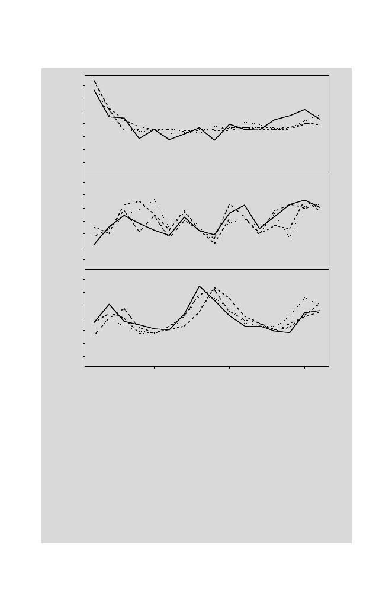

-3 -2 -1 0 1 2 3
Cluster 1
Expression Level
-3 -2 -1 0 1 2 3
Cluster 2
Time point
5 10 15
-3 -2 -1 0 1 2 3
Cluster 3
Fig. 11.8.
Results of
K
-means clustering of expression patterns for 12 yeast genes
(Computational Example 11.2). The time course of expression is similar for genes
within each derived cluster.
If this process is repeated for
k
= 5 and
k
= 6, we can sum the
withinss
values for each value of
k
and plot them versus
k
to obtain a plot like Fig. 10.8.
We prefer that value of
k
beyond which the
withinss
does not drop too much
for each additional increment in
k
. In this case, we choose
k
= 3.
Step 4:
Plot the data,
k
= 3, making a separate plot for each cluster (Fig. 11.8). Use
$cluster
identifiers to extract appropriate rows of
syeast.dat
. The three
panels were plotted using